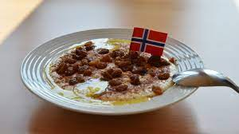

Norwegian Porridge (Risgrøt)

Description
Norwegian porridge is a creamy, salty and sweet rice pudding served with a sprinkle of cinnamon and dried cranberries on top.
Ingredients
-
Short grain rice
-
Water
-
Milk
-
Butter
-
Honey
-
Granulated sugar
-
Kosher salt
-
Vanilla extract
-
Cinnamon powder
-
Dried cranberries
-
Butter
Steps
-
Gather all of your ingredients and cooking tools.
-
In a medium size pot, add your rinsed rice and water and birng to a boil. lower heat to a gentle simmer. Then cover and leave to sit for ten mintues or until all the water is absorbed.
-
Add one third fo themilk and stir it in.l then coer your pot agtain and leave it until the consisitency thinckesn and then add a little more milk every time the consisstenmcy of the porridge thicckesn. you wil likekly have to do this approximately every five to ten mintues or so while still on low heat. you will need to reapeat this sep intull all the mil kis used, the porridge is think, and the rice is tnder. you want his to look lke th best fluffy riced pudding tha has evedr been made. The entire process should take fourtyfivce to fifty five minutes. it might sound likea long time but its going to be well worth the wait!